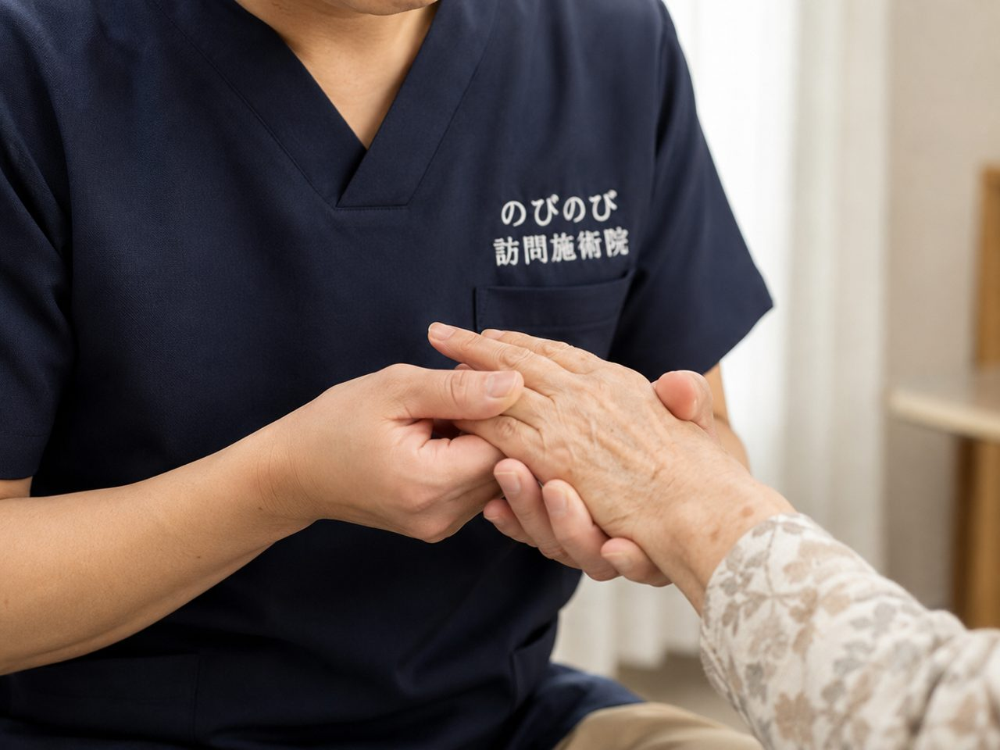

朝、手や指がこわばってなかなか動かない。手首や膝の関節が腫れて痛む。天気が崩れると痛みが増す。関節リウマチとともに暮らすなかで、こうした痛みやこわばりが、日々のこまかな動作を難しくします。治療は専門のお医者さんのもとで続けながら、つらい痛みやこわばりのケアだけでも自宅で受けたい。そんな声をよくいただきます。ここでは、関節リウマチに鍼灸・手技でできることとできないことを、施術の現場から正直にお伝えします。
要点から。関節リウマチは、リウマチ内科・膠原病内科の薬による治療が土台になる病気です。訪問鍼灸マッサージは、その治療に取って代わるものではなく、こわばった周囲の筋肉を和らげ、血のめぐりを促し、痛みやこわばりを軽くする補助のケアです。関節リウマチははり・きゅうの保険の対象となる症状のひとつで、医師の同意があれば医療保険で受けられます。保険は鍼灸で算定し、1割負担なら1回およそ395円。介護保険の限度額とは別の枠です。関節が熱をもって腫れている時期は強い刺激を避け、まず主治医にご相談ください。
関節リウマチは、朝のこわばりから始まることが多い
目が覚めて手を握ろうとしても、指がうまく曲がらない。朝のこわばりがしばらく続き、動かしているうちに少しずつほぐれてくる。関節リウマチのつらさは、この時間帯にいちばん出やすいものです。免疫のはたらきが自分の関節を攻撃してしまい、内側で炎症が起きている状態なので、痛みだけでなく腫れや熱っぽさをともなうこともあります。
特徴的なのは、左右の同じ場所に対称に出やすいこと。それも指の付け根や第二関節といった小さな関節から始まることが多く、瓶のふたが回せない、シャツのボタンがとめにくい、といった何気ない動作でつまずきます。進むと手首や肘、膝、足へと広がっていきます。しかも一日中同じ調子ではなく、炎症の波があって、昨日は動けたのに今日は重い、ということが普通に起こります。
治療の主役は、リウマチ内科・膠原病内科の医師
関節リウマチの治療は、炎症そのものを薬でコントロールすることが土台になります。ここを担うのはリウマチ内科や膠原病内科の医師で、鍼灸マッサージはあくまでその補助という位置づけです。私たちが日々の体を支える一方で、病気の勢いを抑える役割は薬が引き受ける、という分担だと考えてください。
だからこそお願いしたいことがあります。関節が急に強く腫れた、熱が出た、いつもと明らかに違う、といったときは、施術を受けるより先に主治医に相談してください。こうした変化は炎症が動いているサインのことがあり、そこで無理に体をさわるべきではありません。判断に迷う段階では、まず医師です。
手技と鍼でできること
やっかいなのは、こわばりが悪循環を生むことです。動かしづらいから動かさなくなり、動かさないからいっそう固まる。関節の動く範囲がせまくなり、それをかばって肩や腰にまで痛みが広がることもあります。手技や鍼でこの輪をどこかでゆるめておくと、寝返りや起き上がり、着替えといった動作を保ちやすくなります。
やっていることはシンプルで、こわばった筋肉と関節まわりをやわらげ、血のめぐりを促して、こわばりや痛みを軽くしていくケアです。関節を動かす機能訓練も鍼灸に加えて行うもので、追加料金はかかりません。腫れている関節そのものを強く押すことはせず、周囲からそっと支えるように進めます。
できないことも、正直にお伝えします
大事な前提として、鍼灸マッサージは関節リウマチそのものを治すものではありません。体の中で起きている炎症を止めたり、病気の進行を抑えたりする力はなく、薬の代わりにもなりません。ここをあいまいにしたまま「これで良くなる」とは言えないのです。
できるのは、日々の体を少しでも動かしやすく整えて、生活の質を保つ手伝いをすること。治療の柱ではなく、その柱を支える添え木のようなものだと受け止めていただけると、期待と実際のずれが起きにくいと思います。
炎症の波に合わせて、その日の体に手加減する
関節リウマチには調子の波があるので、毎回同じことはしません。施術の前にその日のこわばりや腫れ、痛む場所をうかがい、炎症が強く出ている時期は刺激を弱めるか、その関節を避けて別の場所を中心に整えます。冷えてこわばりが強い朝には、温めながらゆっくりほぐしていくと動きが戻りやすい方が多いです。
ご自宅での過ごし方も少し工夫できます。腫れて熱を持った関節を無理に冷やしすぎない、痛むときは休ませる、握力の要る作業は自助具に頼る。こうした小さな積み重ねが関節への負担を減らします。合う合わないは人によって違うので、実際に触れながらその方に合う加減を探っていきます。
通院がつらい日でも、自宅で受けられる
手や足の関節が痛むと、外出そのものが負担になります。駅までの道、階段、荷物。痛い日ほど動きたくないのに、動かないと固まる。この矛盾に悩む方はめずらしくありません。訪問という形なら、その移動をまるごと省いて、慣れた自宅で施術を受けられます。うかがうのは国家資格を持った施術者で、別途の出張費はいただきません。
これは専門医への通院をやめる話ではありません。薬の調整や検査は病院で続けながら、日々の体のケアは自宅で受ける。この両立で、通院を細く長く保ちやすくなります。
保険で受けるための、料金と手続き
訪問鍼灸マッサージは、医師の同意にもとづく医療保険（療養費）で受けられます。必要なのは医師の同意書で、要介護認定は要りません。介護保険を使っている方でも、その区分支給限度額とは別枠なので、ケアプランの枠を減らさずに利用できます。
費用は、1回の施術が総額3,950円。実際にお支払いいただくのは負担割合の分だけで、1割の方なら1回約395円です。週2回のペースで続けた場合、1割負担で月およそ3,160円が目安になります。まずは同意書について、かかりつけの先生に相談するところから始めていただければと思います。
よくある質問
関節リウマチでも鍼灸は大丈夫ですか？
関節リウマチの方も鍼灸を受けられます。ただし主役はあくまで主治医の薬による治療で、鍼灸はまわりの筋肉のこわばりや痛みを和らげる補助という位置づけです。関節が赤く腫れて熱をもっている時期は、その部分に強い刺激を加えず、まず主治医に相談していただきます。
薬を飲んでいますが、鍼灸と併用して大丈夫ですか？
多くの場合は問題なく併用できますが、飲んでいるお薬や、主治医から言われていることは事前に教えてください。リウマチの治療は主治医の管理が土台ですので、それを尊重したうえで、つらい症状を和らげるケアを行います。
関節リウマチでも医療保険は使えますか？
関節の痛みやこわばりについて医師が施術の必要を認め、通院がむずかしければ、医療保険の対象になる場合があります。介護保険の限度額とは別の枠で受けられます。同意書の手続きはこちらで段取りします。
関節が腫れているときも受けられますか？
腫れて熱をもっている関節には、無理な刺激やもみほぐしを行いません。その部分は避けながら、まわりの筋肉のこわばりを和らげるなど、できるケアを行います。腫れや痛みが急に強くなったときは、まず主治医にご相談ください。
朝のこわばりや手指の使いにくさにも効きますか？
こわばりそのものを消すものではありませんが、体を温めて血のめぐりを促し、手指のまわりの筋肉を和らげることで、朝の動き出しが少し楽になったと感じる方がいます。すぐに、というより続けることで変化を目指すケアです。効き方には個人差があります。
リウマチのこわばりを自宅でケアするには、どうすればいいですか？
手足や体を冷やさないこと、痛くない範囲で関節をやさしく動かすこと、炎症が強い日は無理をしないことが基本です。訪問のたびに、手指に負担の少ない体の使い方や過ごし方をお伝えし、ご家族と一緒に取り組めるようにします。
手や足が痛くて通院がつらいのですが、自宅で受けられますか？
はい。施術者がご自宅へ伺うので、通院の負担なく受けられます。道具はすべて持参し、特別な準備は要りません。専門医への通院は続けながら、日々の痛みやこわばりのケアだけを自宅で受ける、という形が取れます。
リウマチの薬の治療と一緒に受けられますか？
はい。治療に取って代わるものではなく、リウマチ内科・膠原病内科の治療を続けながら、こわばりや痛みを和らげる補助として受けていただけます。治療と両立する形で、無理なく続けていきます。